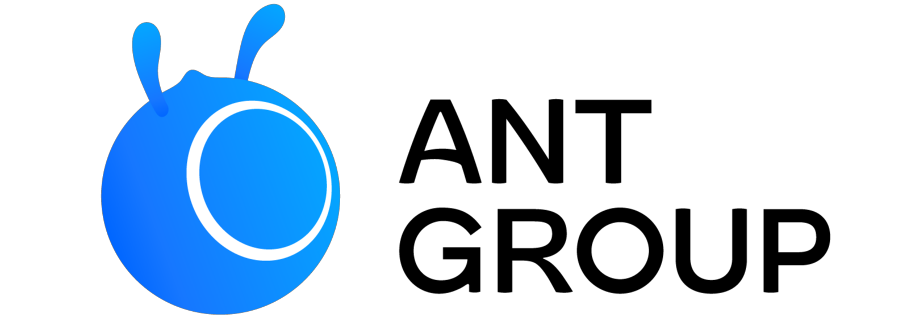

Tao Sun

Hi! I am a fifth-year PhD student in Computer Science at Stony Brook University, fortunately advised by Prof. Haibin Ling.
I am broadly interested in machine learning and computer vision, particularly vision-language learning, domain adaptation, weakly-supervised learning. I also work on adversarial attack and defense of neural networks.
Contact: tao # cs.stonybrook.edu
news
| Aug 2023 | One paper accepted by Digital Discovery! |
|---|---|
| Jul 2023 | One paper on Active Domain Adaptation accepted by ICCV 2023! |
| Mar 2023 | One paper on Backdoor Cleansing accepted by CVPR 2023! A preliminary version appears in BANDS workshop as Oral Talk. |
| Feb 2023 | Attended AAAI 2023 and presented one paper on Domain Adaptation at Washington, DC. |
selected publications
-
Mask and Restore: Blind Backdoor Defense at Test Time with Masked Autoencoder
Tao Sun, Lu Pang, Chao Chen, and Haibin Ling
arXiv 2023 | arXiv • Code
-
Local Context-Aware Active Domain Adaptation
Tao Sun, Cheng Lu, and Haibin Ling
ICCV 2023 | Paper • arXiv • Code
-
Backdoor Cleansing with Unlabeled Data
Lu Pang, Tao Sun, Haibin Ling, and Chao Chen
CVPR 2023 | Paper • arXiv • Code
-
Domain Adaptation with Adversarial Training on Penultimate Activations
Tao Sun, Cheng Lu, and Haibin Ling
AAAI 2023 | Oral Presentation • Paper • arXiv • Code
-
Prior Knowledge Guided Unsupervised Domain Adaptation
Tao Sun, Cheng Lu, and Haibin Ling
ECCV 2022 | Paper • arXiv • Code
industry experience
Machine Learning Engineer Intern, Adobe DX (May 2023 - Aug. 2023)
Time series forecasting

Machine Learning Engineer, Ant Group (July 2018 - July 2019)
Recommender system
Software Engineer Intern, Baidu NLP (Sept. 2017 - Dec. 2017)
News matching